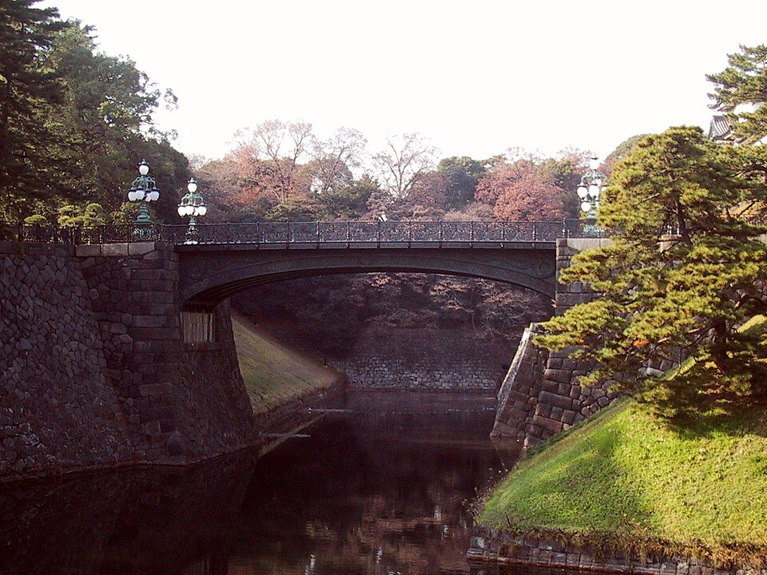
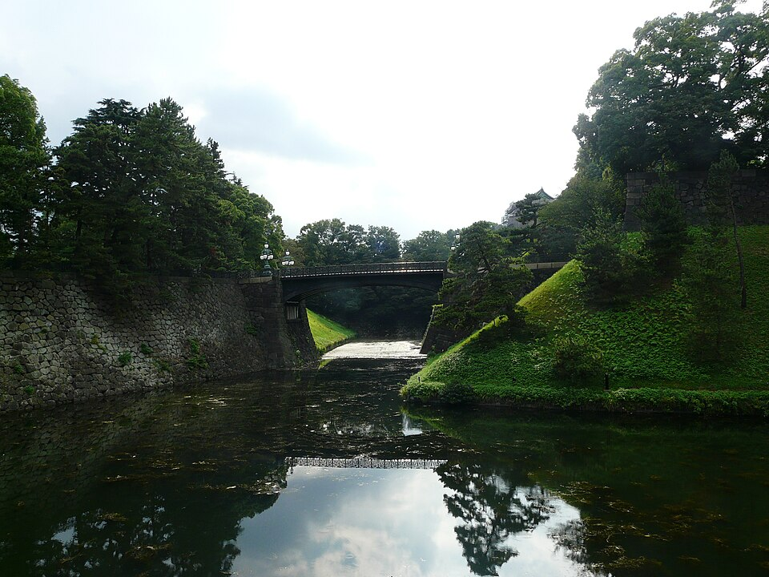
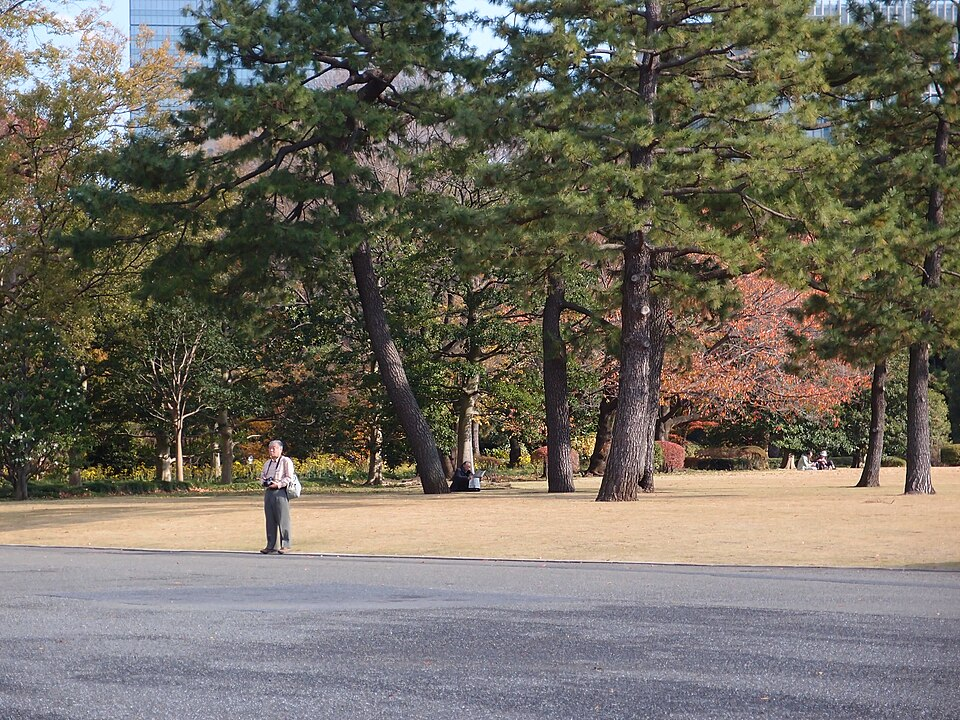

Tokyo · сб 10.10 · волна города
- Закат (16:20-17:40) распродан на все дни 10-13.10. Сегодня распродано всё, и днём, и вечером.
- Есть днём (2 700 ¥): вс 11.10 11:00-12:20 (11:40 ○), пн 12.10 10:00-12:40 (11:20, 11:40, 12:20 ○), вт 13.10 10:20-12:40 (облачно), ср 14.10 10:00-12:40.
- Вечер: вс 11.10 18:40 и вт 13.10 15:20 - последние места.
- Покупка: регистрация в Webket, капча, карта. Если сайт покажет 403, переключись с Wi-Fi на мобильный интернет.
- Закат сегодня → смотровая мэрии, бесплатно и без билетов (карточка B).
JR Akihabara → Harajuku
Жёлтая линия JR Sobu (направление Mitaka) до Yoyogi, там 1 остановка по Yamanote до Harajuku. Без пересадки: Yamanote через Tokyo, 32 мин.
Yoyogi Park - центральный парк
Большой городской парк в 5 минутах от станции Harajuku: газоны, пикники, музыканты и уличные артисты по выходным. Без забора и билетов, открыт круглосуточно. Это и есть «жизнь города» в выходной.
Фото осенние (ноябрь), сейчас деревья ещё зелёные. Храм Meiji Jingu в соседнем лесу, если захочется: см. блок с фото ниже.


Harajuku и Omotesando: улицы и обед
Takeshita-dori - узкая улица молодёжной моды, самая плотная толпа Tokyo, в праздничную субботу особенно. Пройти 5 минут ради ощущения. Потом широкий бульвар Omotesando с деревьями и архитектурными бутиками брендов, здесь обед.


Cat Street → Shibuya
Тихая пешеходная улица параллельно шумным, магазины и кафе. Выводит к Miyashita Park в Shibuya.


Shibuya: Miyashita Park, перекрёсток, Hachiko
Miyashita Park - парк на крыше торгового центра. Дальше знаменитый перекрёсток Shibuya Scramble и памятник Hachiko у станции.


SHIBUYA SKY - крыша на 229 м
Открытая крыша небоскрёба Shibuya Scramble Square. В ясный вечер на западе виден силуэт Fuji.
На крышу нельзя: сумку, рюкзак, кепку, селфи-палку. Всё это в шкафчики на 46 этаже. Телефон можно.

.jpg){kind=link}

.jpg){kind=link}
Закат на смотровой мэрии Tokyo (Shinjuku)
202 м, вход бесплатный и без билетов, 9:30-22:00 (вход до 21:30). От Shibuya 3 остановки по Yamanote до Shinjuku, потом ~10 мин пешком от западного выхода. Fuji оттуда тоже видно. Ужин потом в Shinjuku.

.jpg){kind=link}
Домой
Из Shibuya: Yamanote до Yoyogi, там жёлтая Sobu до Akihabara, 28-31 мин, 253 ¥. Из Shinjuku: жёлтая Sobu или оранжевая Chuo до Ochanomizu/Kanda.
Что такое «императорские» места
Чтобы решить, нужно ли тебе это. Обе точки - не город, а тишина и история.
Meiji Jingu - храм, а не дворец
Синтоистское святилище 1920 года в честь императора Meiji. Главное в нём не здание, а лес из ~100 000 деревьев посреди мегаполиса: широкие гравийные аллеи, огромные деревянные ворота, тишина. Зал простой, деревянный. По выходным часто видно свадебные процессии в кимоно.


Imperial Palace - дворец императора
Здесь живёт император, сам дворец закрыт. Снаружи видно рвы, каменные стены бывшего замка Edo и мост Nijubashi на фоне небоскрёбов Marunouchi. Восточный сад - руины замка с газонами и соснами, бесплатно; по справочникам открыт с 9:00 до 16:30, закрыт по пн и пт. Впечатление спокойное, «город» здесь только фоном.





.jpg){kind=link}

.jpg){kind=link}
Следующие дни
- Вс 11.10: ясно, Fuji утром без облаков. Shibuya Sky днём: свободно 11:00-12:20.
- Пн 12.10, праздник: открыт сад Shinjuku Gyoen. Конные лучники yabusame в парке Toyama обычно в этот день, объявления на 2026 нет. Главный день фестиваля Kappabashi.
- Вт 13.10, облачно, слабая морось: старый Tokyo рядом с отелем - Asakusa, Yanaka, Ueno.